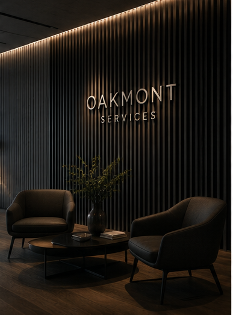

Fábrica de Software
Software Engineering Factory
Entrega gestionada por células, con procesos, SLAs y delivery governance.
Consultoría en tecnologías de la información
Acompañamos a la dirección ejecutiva en la definición, evolución e ingeniería de soluciones tecnológicas — de la estrategia a la producción, bajo un modelo de gobierno único.
Nuestra convicción
El valor no proviene de adoptar tecnología, sino de orquestar estrategia, arquitectura y ejecución como un sistema único.
Punto de vista
El mantenimiento del legado absorbe una parte desproporcionada del presupuesto de TI y frena la capacidad de innovar.
El negocio exige entregar más rápido sin comprometer calidad, seguridad ni cumplimiento.
La demanda de capacidades críticas supera de forma persistente a la oferta disponible.
Value at stake
Ingresos no capturados por time-to-market lento y experiencias digitales rezagadas.
Sobrecosto operativo del legado y de infraestructura sobredimensionada que drena la inversión disponible.
Exposición a interrupciones, brechas de seguridad e incumplimiento regulatorio.
Cada trimestre de inacción es valor que se transfiere a la competencia.
La ambición de Oakmont
Consultora especializada en TI que actúa como socio estratégico para la definición, evolución e implementación de soluciones tecnológicas.
Integramos advisory y delivery bajo un mismo techo: la estrategia que diseñamos es la misma que ejecutamos y de la que respondemos.

Framework de entrega
Strategy & Advisory
Diagnóstico, arquitectura objetivo y hoja de ruta priorizada por valor.
Modernization & Architecture
Rediseño de capacidades y transición del estado actual al estado objetivo.
Engineering & Operations
Ingeniería, integración, despliegue y operación gestionada.
Arquitectura de capacidades
Cuatro capacidades núcleo que construyen. Cuatro habilitadoras que aseguran que lo construido sea seguro, confiable y medible.
Capacidades núcleo
Software Engineering Factory
Entrega gestionada por células, con procesos, SLAs y delivery governance.
Technology Strategy
Diagnóstico, arquitectura objetivo, roadmap multianual y caso de negocio.
Specialized Talent Solutions
Talento senior validado, técnica y culturalmente, con reemplazo garantizado.
Cloud Modernization
Estrategia óptima por aplicación bajo el marco 7R — sin recetas únicas.
Capacidades habilitadoras
Inteligencia Artificial y Datos
Del dato a la decisión y de la IA a la ventaja operativa, con ROI demostrable.
Ciberseguridad
Seguridad por diseño — no como un control de última hora.
DevOps · SRE · FinOps
Plataformas modernas con confiabilidad y eficiencia de costo demostrables.
QA & Testing
Que el software cumpla antes de impactar al usuario y al negocio.
Engagement y gobierno
Entendimiento del negocio, el reto y el estado actual.
Alcance a la medida, modelo de entrega y métricas de éxito.
Ejecución gestionada con transparencia y comunicación continua.
Medición de impacto, iteración y evolución continua.
Por qué Oakmont
Respondemos por la estrategia que ejecutamos.
Experiencia real en entornos de alta exigencia.
Independencia al servicio del negocio.
Preparamos a la organización para el siguiente ciclo.
Time-to-market, costo y riesgo como métricas de éxito.
Credentials & proof points
Siguiente paso
Oakmont existe para cerrarla. Propongamos un diagnóstico estratégico de dos semanas — sin compromiso, con hallazgos accionables.